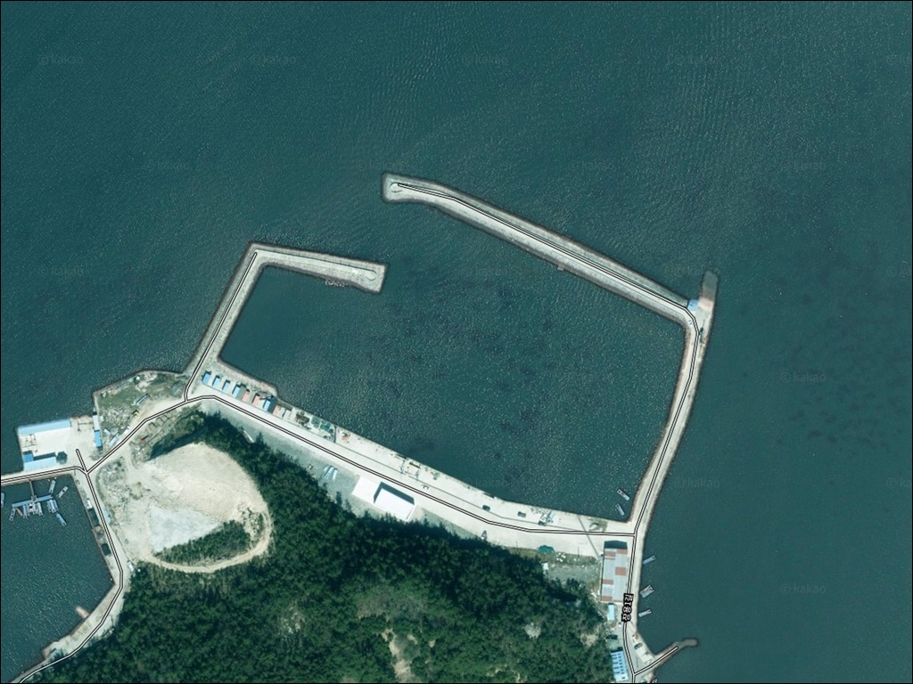
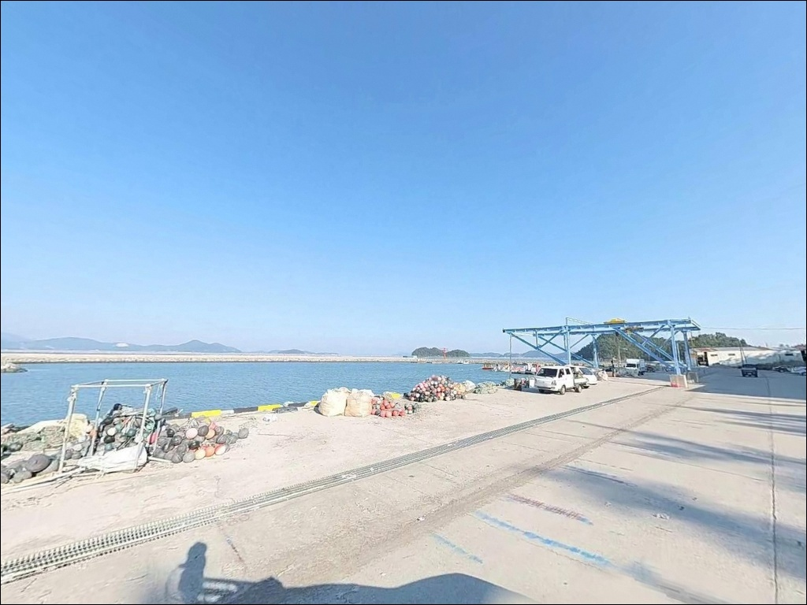
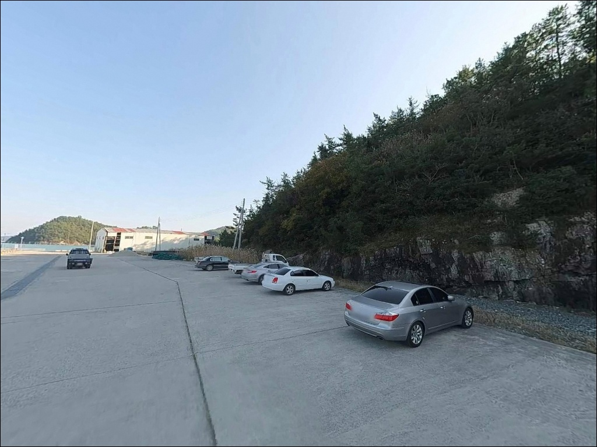
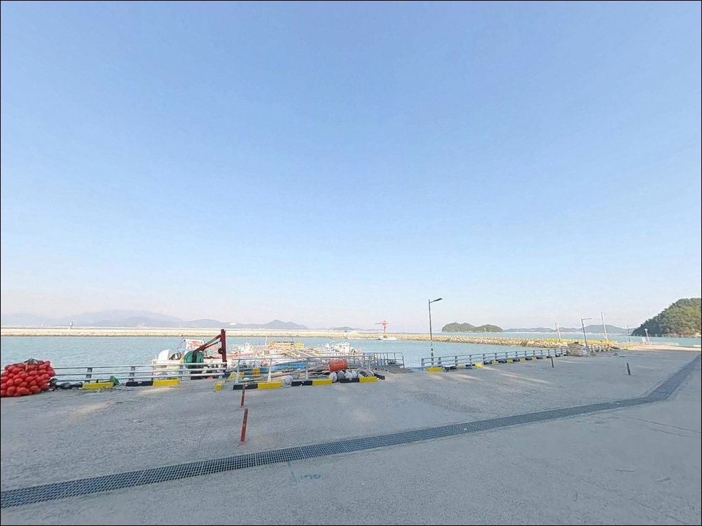
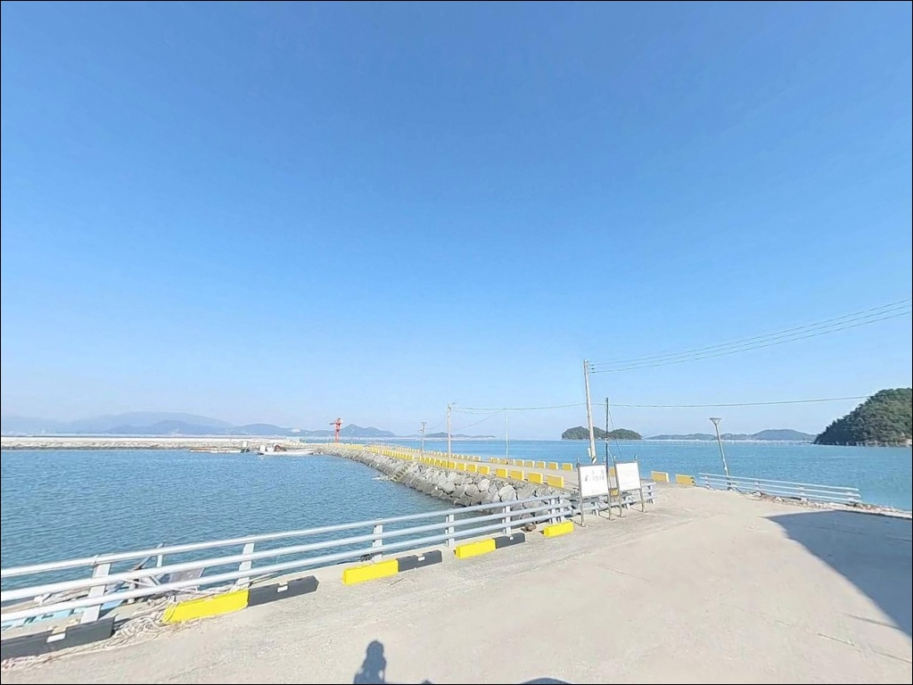
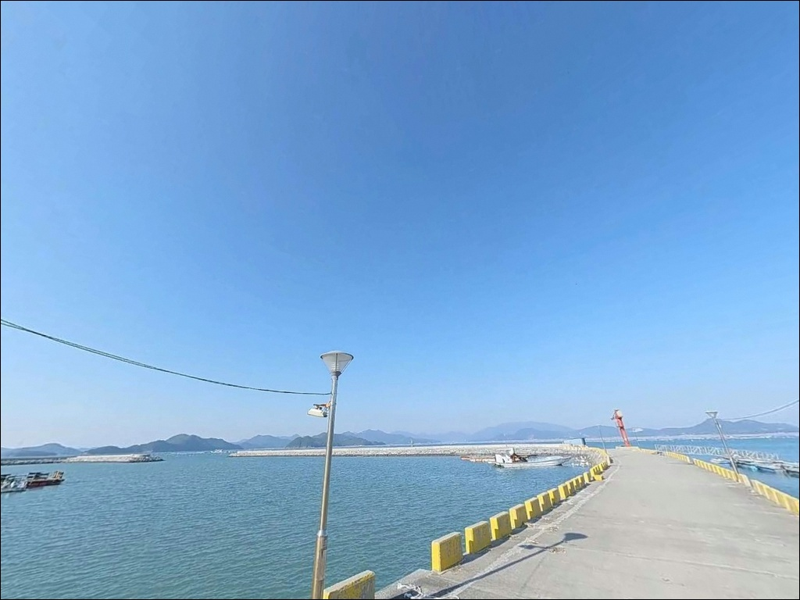
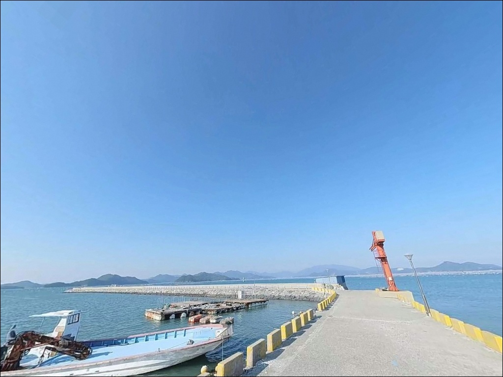
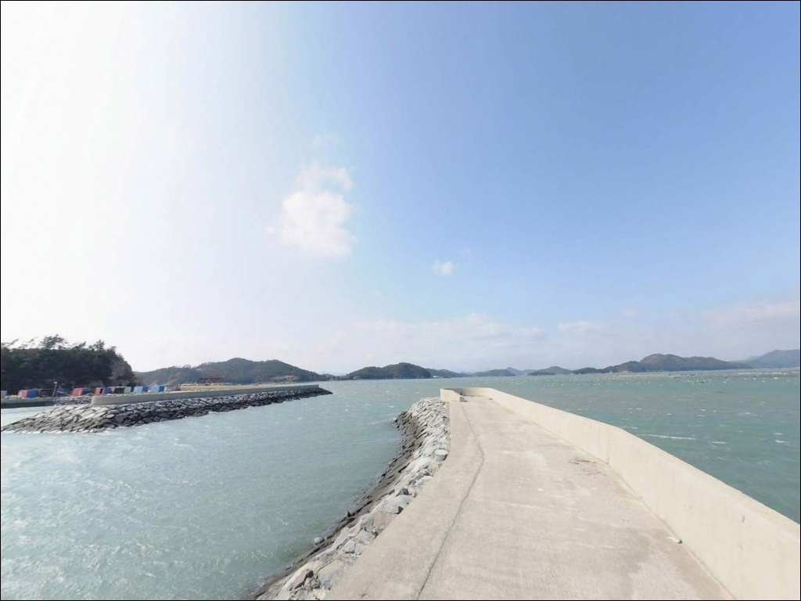
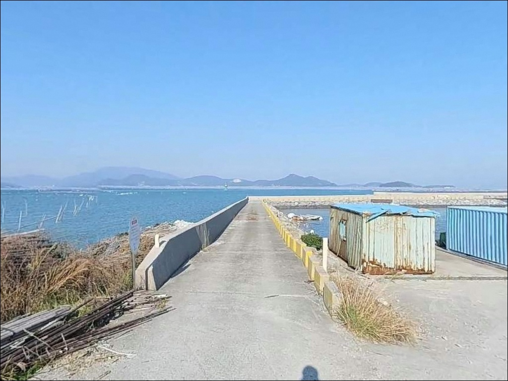

장용항, 장용방파제, 장용방파제, 조약도 전남 완도군 해변 끝자락 조용한 바다 차박 낚시터


포인트 안내
장용항
전남 완도군 약산면 장용리 478-34
장용항은 약산면사무소 소재지인 장용리 해안에
자리한 지방어항입니다.
동방파제(40m), 본방파제(170m), 서방파제(200m)의
복합 방파제 구조를 갖추고 있어
약산면 내 소형 항구 중 규모가 있는 편에 속합니다.
방문 전에 조황 정보를 검색해도
직접 낚시 후기가 많지 않은 곳이고,
그만큼 덜 알려진 포인트이기도 합니다.
조약도(助藥島)는 약산대교와 고금대교를 통해
강진 마량에서 육지와 연결되어 있습니다.
완도권 남해 내만 해역 특성상
갑오징어·감성돔 낚시가 활발한 해역이며,
장용항은 그 조약도의 관문 역할을 하는 항구입니다.
이 글은 장용항의 진입 환경, 차박 여건,
방파제 지형 기반 낚시 조건에 집중합니다.
조황 단정이나 특정 어종 보장은
이 글의 범위에 포함되지 않습니다.

1. 진입 동선과 차량 접근 여건
장용항으로 들어오는 진입로는
약산로(지방도)에서 장용리 중심부를 통과해
항구 방향으로 직접 이어집니다.
약산면사무소, 약산중학교, 약산초등학교를 거치는
포장 구간으로 도로 폭은
승용차 교행이 가능한 2차선 수준입니다.
다만 항구 진입부 막바지 구간은
소형 어항 내부 도로 특성상
1~1.5차선이 일부 포함됩니다.
캠핑카나 대형 SUV라면
약산로에서 갈라지는 진입 구간의
폭을 미리 지도로 확인해 두는 편이 안전합니다.
면 소재지 항구라는 특성상
항구 내 또는 인근에
차량 회차 공간이 확보되는 구조입니다.
주차는 선착장 인근 공터와
항구와 접한 해안 도로변을 우선으로 삼고,
어선 작업 구역과 슬로프 인접 구간은
반드시 비워두는 것이 기본 매너입니다.

2. 차박 환경과 야간 체류 여건
장용리는 약산면사무소 소재지입니다.
면사무소, 학교, 상가가 반경 1km 안에 모여 있어
가로등이 설치된 도로망이 항구까지 이어집니다.
외딴 소형 항구와 달리
야간에도 기본적인 시야 환경은 확보되는 편입니다.
다만 민가와의 거리가 가깝습니다.
야간 소음과 차량 조명에 주의해야 하고,
프라이버시 측면에서는
약산면 내 외진 소형 항보다
체류 감각이 노출된 편으로 봐야 합니다.
낚시 후 조용히 하룻밤 머무는 용도라면
선착장 공터를 중심으로
자리를 잡는 방식이 현실적입니다.
북서측 외항 방향으로
장흥반도 수역이 열려 있어
북서풍이 강한 시기에는
파도가 항구 내로 일부 유입될 수 있습니다.
내항 쪽은 섬 지형으로 차폐되어
상대적으로 잔잔한 환경이 유지됩니다.


3. 주변 편의시설과 인프라 현황
장용항 주변은 약산면 소재지 생활권 안에 있습니다.
항구에서 도보 거리 안에
약산낚시(장용리 898번지)가 영업 중입니다.
현장에서 소품이 부족하거나
채비를 추가로 챙겨야 할 때
활용할 수 있는 가장 가까운 선택지입니다.
항구에서 가까운 거리에
농협주유소(장용리 880-11)가 위치합니다.
약산면 소재지 방향으로는
식당과 약국 등 기초 인프라 이용이 가능합니다.
편의점은 당목항 방향으로
약 3~4km 이동하면
GS25 당목항점(해동리 750-4)을
이용할 수 있습니다.
응급 상황 발생 시
약산면 보건지소가
반경 1km 이내에 위치합니다.
완도 본섬까지는 약산대교를 통해
차량으로 20분 내외 소요됩니다.

4. 방문 전 준비사항과 현장 체크 포인트
장용항은 완도권 남해 내만 해역에 위치합니다.
물때의 영향이 크게 작용하는 해역으로,
바다타임에서 약산면 기준 물때를 먼저 확인하고
조류가 살아나는 타이밍에 맞춰
입장 시각을 결정하는 것이
이 해역 낚시의 기본 접근법입니다.
방파제 끝단과 테트라포트 구간은
파도가 있을 때 미끄러움에 각별히 주의해야 합니다.
야간 낚시라면 헤드랜턴은 필수이고,
방파제 진입 시 구명조끼도 반드시 착용해야 합니다.
내만 구조라도 기상 악화 시
바람 영향이 즉시 발생하는 지형이므로
출발 전 기상 확인은 기본입니다.
어촌 생활권 안에 있는 항구입니다.
어선 작업 구역과 어구 적재 공간에는
낚시 자리를 잡지 않는 것이 기본 매너이며,
야간 차량 조명과 소음도
주민 생활에 지장이 없도록 관리해야 합니다.
쓰레기는 전량 수거해 귀가하는 것이 원칙입니다.

5. 지형 기반 낚시 여건 분석
장용항은 동방파제(40m), 본방파제(170m),
서방파제(200m)의 세 방파제로 구성된 복합 구조입니다.
조약도 북서쪽 해안에 자리하며
고금도와 마량 방향으로 이어지는
수로 구조와 맞닿아 있습니다.
조류 소통이 활발한 해역 특성이
이 구조를 통해 방파제 끝단으로 집중됩니다.
서방파제와 본방파제 끝단 기준으로
수심은 3~8m 구간이 형성됩니다.
내항 안쪽은 모래뻘 바닥 구조이며,
방파제 콧부리와 외항 쪽은
암반·자갈 혼합 바닥 가능성이 있는 구간입니다.
바깥으로 던질수록 수심이 깊어지는
완만한 경사 지형이 외항 방향으로 이어집니다.
리아스식 해안 특성상
장용리 일대는 소규모 만입부가 형성되어 있어
외해 파도 영향이 직접 미치는 구조는 아닙니다.
방파제 외항 방향은 북서쪽으로 열려 있어
조류의 흐름이 살아나는 물때에
방파제 끝단에서 흘림 낚시와 원투 운용이
유효한 여건을 갖춥니다.
출조 전에 약산면 일대 조황을 먼저 검색해 보시기 바랍니다.


6. 조약도 해역에서 어울리는 낚시 스타일과 방식
장용항 지형 조건에서 가장 우선으로 고려할 방식은
에깅(갑오징어 워킹 에깅)입니다.
조약도 일대 완도권 내만 해역은
갑오징어 서식에 적합한 수심과 수온 조건을 갖추고 있습니다.
방파제 콧부리와 내항 경계 구간이
에깅 채비를 운용하기 좋은 자리이며,
에깅이란 갑오징어·무늬오징어를 대상으로
에기(인조 미끼)를 사용하는 루어낚시 방식입니다.
원투낚시는 서방파제와 본방파제 외항 방향으로
채비를 멀리 투척해 운용합니다.
모래뻘 바닥이 형성된 구간에서
붕장어와 저서성 어종을
기대해 볼 수 있는 지형 조건입니다.
정조 타이밍에 맞춰 바닥을 탐색하는 방식이
이 포인트 구조에 잘 어울립니다.
찌낚시도 함께 운용할 수 있습니다.
조약도 일대 해역은 감성돔 포인트로 알려진 수역입니다.
방파제 테트라포트 주변과
외항 콧부리 구간에서
조류가 살아나는 물때에
흘림 찌낚시 방식으로 접근하는 것이 유효합니다.

7. 대안 포인트와 플랜B 동선
장용항 조황이 기대에 못 미칠 때
가장 먼저 이동할 대안은
득암항(덕암리 341-4)입니다.
장용항에서 남쪽으로 약 3km 거리에 위치하며
같은 조약도 내 동일 해역 조건을 공유합니다.
지방어항 규모의 방파제 구조를 갖추고 있어
낚시 포인트 다양성과 주차 여건이
장용항보다 더 넓은 선택지를 제공합니다.
동쪽으로 약 4km 이동하면
당목항(해동리 750-4)에 닿습니다.
2021년 국가어항으로 지정된 곳으로
방파제 규모와 진입 여건이 안정적입니다.
GS25 편의점이 인접해 있어
편의시설까지 해결하며 낚시를 이어가기 좋은
대안 동선입니다.
차박 여건 측면에서
득암항은 장용항보다 민가 밀집도가 낮고
외항 쪽 주차 공간이 더 여유 있는 구조입니다.
장용항의 야간 노출 환경이 불편하게 느껴진다면
득암항으로 자리를 옮기는 것이
현실적인 플랜B입니다.

조약도 방파제 낚시를 처음 탐색한다면
장용항이 출발점이 됩니다
에깅과 원투낚시를 병행하고 싶은 낚시인이라면
장용항의 복합 방파제 구조는
두 방식을 동시에 운용하기 좋은 조건입니다.
조류가 살아나는 물때를 맞추면
방파제 끝단 에깅과 외항 방향 원투를
한 자리에서 이어갈 수 있는 포인트입니다.
반면 낚시 후기가 많은 검증된 포인트를 선호하거나
편의시설이 바로 옆에 있어야 하는 환경을 원한다면
당목항 또는 득암항이 더 맞는 선택입니다.
장용항은 아직 덜 알려진 포인트로,
직접 발품을 들여 탐색해 볼 의지가 있다면
조약도 낚시의 기점으로 삼기에 충분한 구조를 갖추고 있습니다.
약산면 소재지 항구라는 접근성과
도보권 낚시용품점이라는 인프라를 바탕으로
조용히 하룻밤 차에서 머물다
새벽 물때에 맞춰 방파제에 서는 출조라면,
장용항은 그 조건을 충분히 갖춘 포인트입니다.